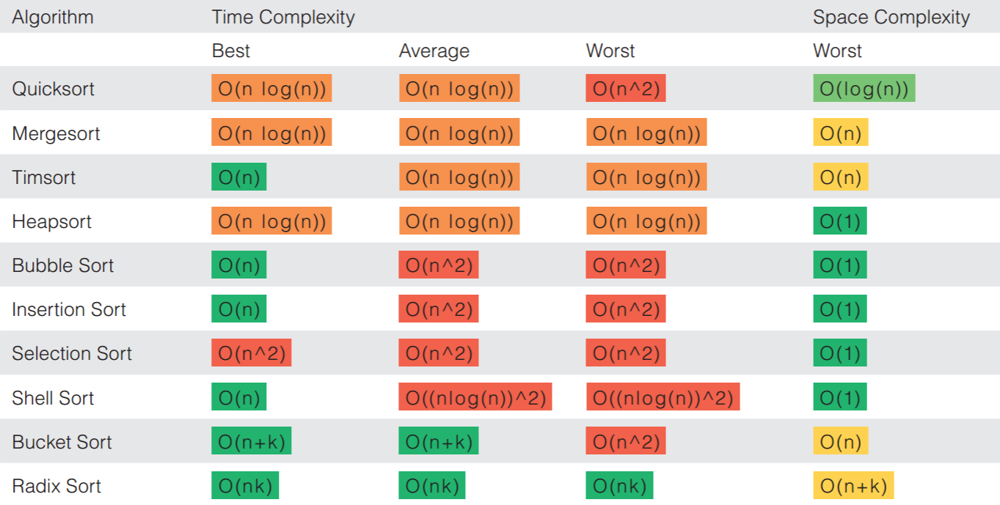

Scop si inspiratie
Acesta este un proiect cu scopul de a oferi o intelegere mai buna asupra algoritmilor de sortare. Un algortim este format dintr-o serie de instructiuni care realizeaza anumite functii.
Un algoritm de sortare este algoritm care pune elementele unei liste in ordine, cel mai adesea sortand numeric sau lexicografic. O astfel de operatie este importanta deoarece ea ajuta la rularea altor algoritmi(vezi cautarea binara sau dijkstra)
Exista sute de algoritmi de sortare cunoscuti, fiecare cu caracteristicile sale specifice. Acestia sunt clasificati dupa doua criterii: complexitatea temporala si cea spatiala
Aceste complexitati sunt reprezentate prin notatia specifica O(n), unde n reprezinta numarul
de
elemente
sortate.

In functie de complexitatea temporala, majoritatea algoritmilor folositi au o complexitate de O(n^2)(de exemplu bubble sort), iar cei mai rapizi sunt O(nlogn)((de exemplu quicksort). Cu toate acestea mai exista o clasa de algoritmi de sortare care au complexitatea teoretica mult mai buna, insa in practica pentru liste cu un numar destul de mic de elemente se comporta prost din cauza structurilor de date aditionale pe care le folosesc. Acesti algoritmi sunt folositi cu ajutorul paralelismului pentru a sorta liste uriase(big data), deoarece sunt cu mult mai rapizi decat ceilalti(vezi bucket sort) 
O alta caracteristica a algoritmului o mai reprezinta stabilitatea. Spunem ca un algoritm de sortare
este
stabil daca in cazul a doua elemente egale, se pastreaza ordinea din lista initiala.